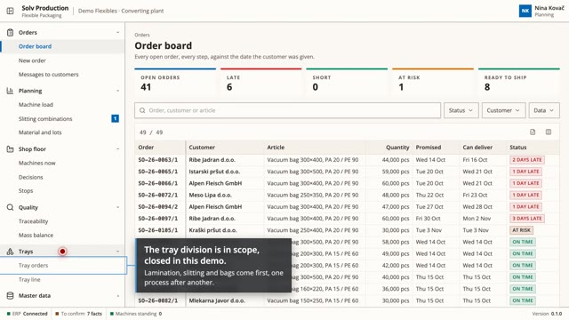
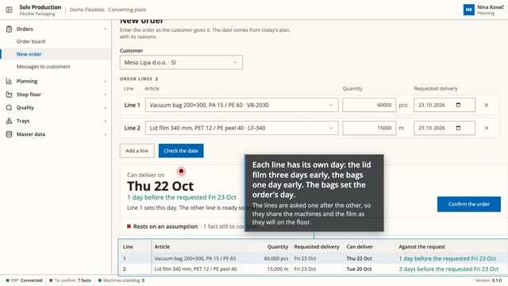
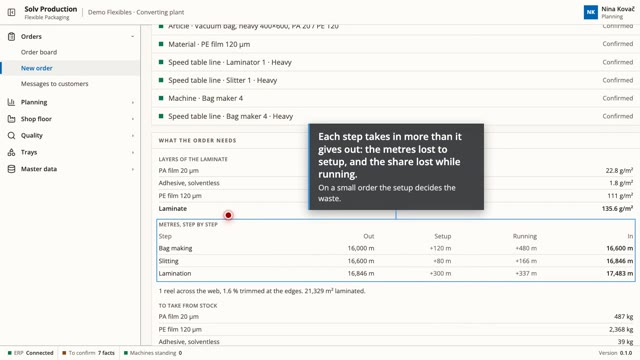
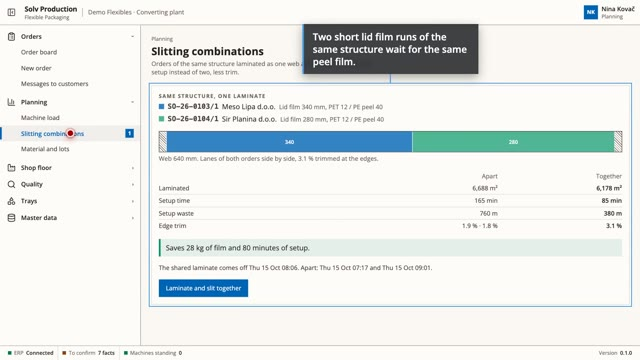
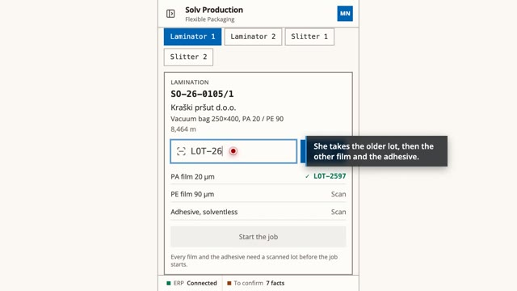
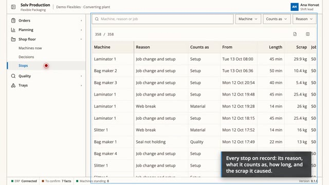
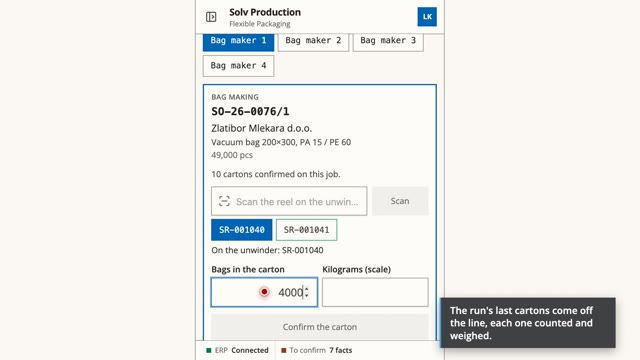
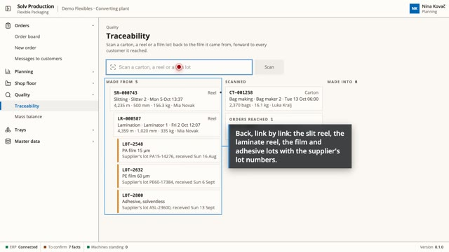
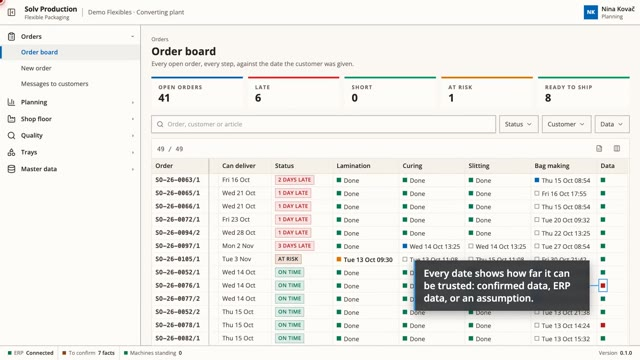

Solv Production · Flexible Packaging
Order to delivery date, on three devices: a date with its reasons the moment an order is entered, the shop floor reporting reel by reel, traceability in one scan, every figure marked by how far its data is confirmed.
We recommend watching the films on a computer with a large screen, in full screen.
-

Overview One program at the desk, on the shift lead's tablet and on a terminal at every machine, beside the ERP the plant already uses. -

From the phone call to a date An order of several lines, a date for every line with every reason, curing as a wait, one assumption confirmed and the date turns green, the customer's confirmation in their language. -

Where every kilogram comes from The laminate as layers, waste step by step, the film to buy, the line that sets the order's day, lots oldest first. -

Capacity, curing and one laminate for two orders Machine load over two weeks, and a slitting combination that saves film and setup, accepted by the planner. -

At the machine Lots scanned at the start with the oldest-first suggestion, a wrong weight caught, a reel's label, a stop with its scrap. -

A breakdown and what it costs The shift lead's tablet, every stop on record, the late orders on the board the same morning. -

The last carton and the customer The last carton, the order within its tolerance, the customer told the same minute. -

A complaint, traced in one scan Back to the film lots, forward to every customer, and the mass balance with the loss nobody wrote down. -

Day one red, then green The plant's own data, the facts nobody confirmed yet, confirmed one by one.
A demonstration plant: customers, orders and figures are invented. The machines, rules and data sources are the ones the program reads from a real plant.
Solv · solv.com.tr